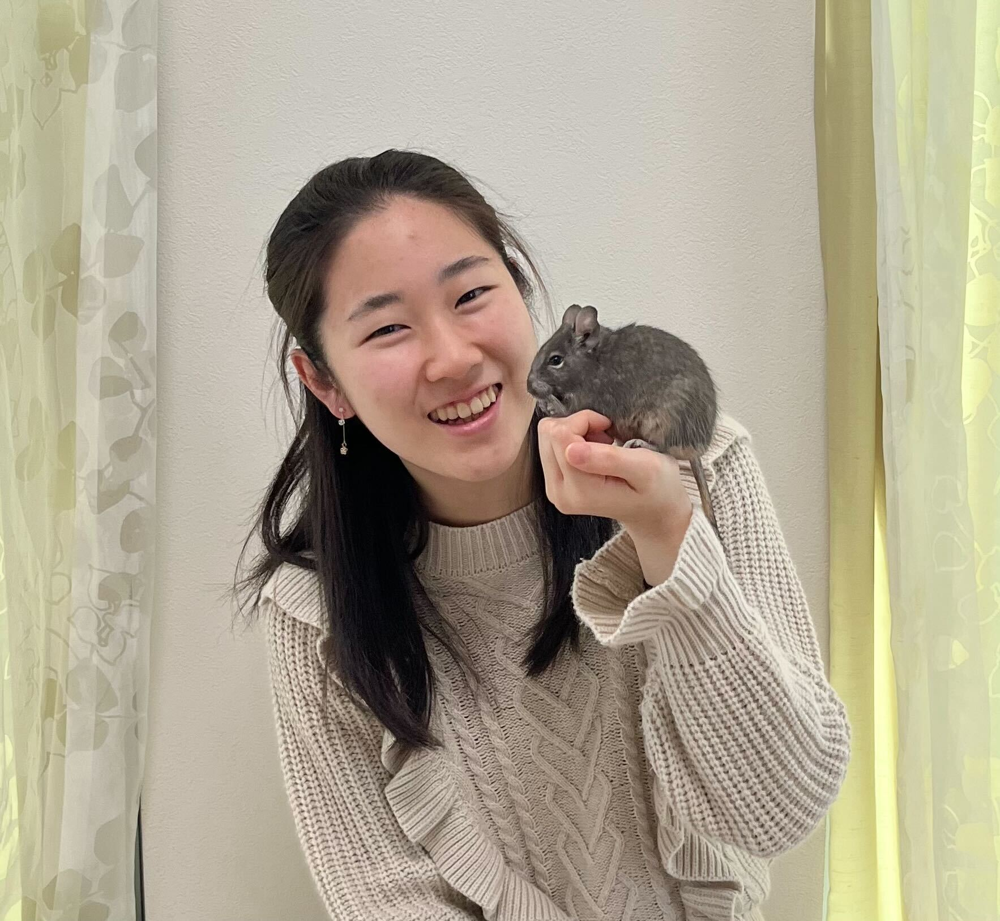

基本データ
詳細
これまでの人生
POSSEの一押しポイント
基本データ

1.奥田知樹
誕生日
星座
出身地
学校
学部
詳細
小さい頃どんな子だったか
クソガキ。消しゴムのカスを投げていた。ごめんなさい。
POSSE外で頑張っていること
授業を真面目に受けてます
好きな○○
好きなこと
好きな食べ物
好きな色
好きなひらがな
好きな岐阜
これまでの人生
2001
岐阜 爆誕
2008
小学校入学
2014
中学校入学
2017
高校入学
2021
慶応義塾大学入学
2022
POSSEと出会う
POSSEの一押しポイント
縦もく、横もく、ブラシス制度でたくさんの人と出会えるところ！